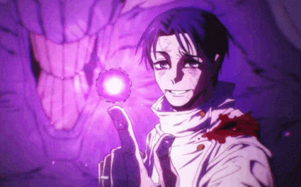
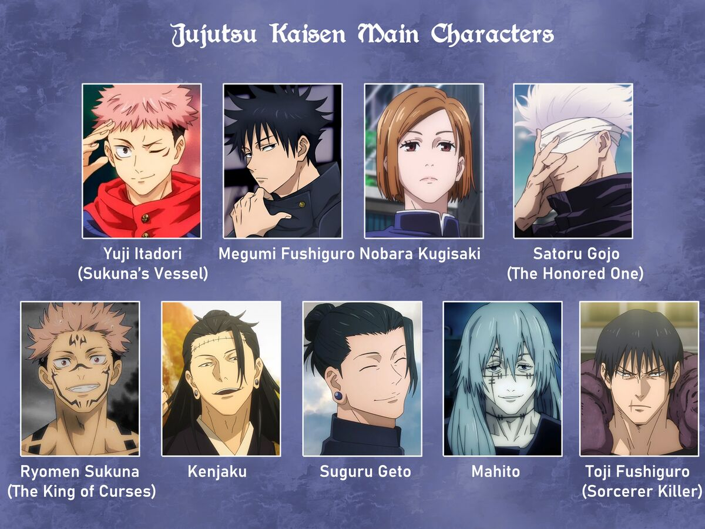

Jujutsu Kaisen es un anime de acción y fantasía oscura que sigue a Yuji Itadori, un estudiante con gran fuerza física que termina involucrado en el mundo de las maldiciones tras consumir un objeto maldito.
Luego de este evento, Yuji se convierte en el recipiente de Sukuna, una poderosa maldición, y comienza su entrenamiento en la escuela de hechicería para combatir espíritus malignos.



es una buena historia donde se puede divertir mucho viendola ,ideaL PARA PAsar el tiempo , es de mis favoritos por todo eso ,la verdad me encanta